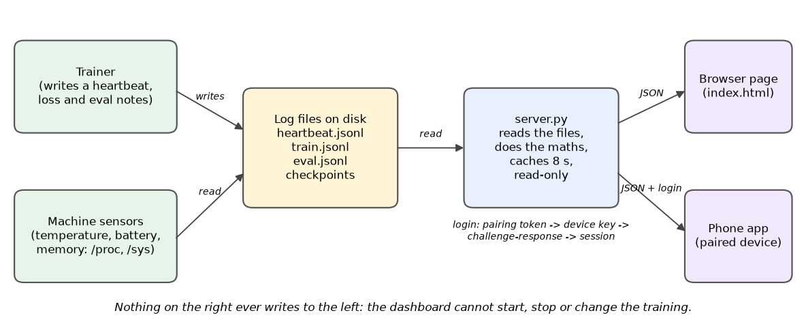

How it works

The dashboard is one small Python file (server.py, standard library only) and one web page (index.html). It never writes to the training data and never controls the trainer: it only reads files and system information and turns them into charts.
What it reads
| source | what it holds | used for |
|---|---|---|
logs/heartbeat.jsonl | one line a minute: time, battery, AC power, CPU temperature, load, step, "training" flag | status lights, speed, stops (a gap of more than 3 minutes counts as a stop) |
logs/train.jsonl | step, loss, gradient size, learning rate | the loss chart and training trends |
logs/eval.jsonl | validation scores for the model and the baselines (random, strided, heuristic) | the validation-regret chart |
ckpt/ckpt_*.npz, best.npz, best_meta.json | saved copies of the model | "latest checkpoint", checkpoint list |
config.json | run configuration (for example whether geometric features are on) | a warning if the model's inputs are empty |
samples.tsv (optional) | a 5-minute sampler: free memory, swap, temperature, throttle counter, clock speed | the memory chart and throttling warnings |
/proc, /sys, systemctl --user show | live machine and service state | "now" cards |
demo/make_demo_data.py writes all of these with synthetic numbers, so you can try the dashboard with no real run.
What it serves
| route | answer |
|---|---|
GET / | the page (only when running with NN_DASH_NOAUTH=1 on loopback) |
GET /api/stats?range=... | the statistics as JSON. range is live, 1h, 6h, 24h, 7d, all or run (since the last stop). Needs a session token unless auth is off. |
GET /auth/challenge, POST /auth/redeem, POST /auth/login | the paired-device login (see SECURITY) |
Results are cached for 8 seconds, so many open tabs cost almost nothing.
Following the right run
Training runs live in different directories. If NN_RUNS="dir=unit;dir=unit" is set, the server picks the run whose trainer unit is active (otherwise the one with the freshest heartbeat), and tells you which one in the "Trainer" card. Before this existed, the page happily reported a stopped older run while a new one was healthy: see LEARNINGS.
Where the maths happens
The server aligns everything on a common time grid and does the summaries. The page (in JavaScript) fits the trend lines, correlations, regressions and bands from the points it receives, so the formulas are in index.html. The statistical choices (autocorrelation-adjusted intervals, effective sample size, out-of-sample R-squared) are explained in How to read the charts.
Staying up
The page retries every 5 seconds if the server disappears and refreshes when you return to the tab. The provided nn-dashboard.service restarts the server if it exits.